Découvrez l'Ecosse
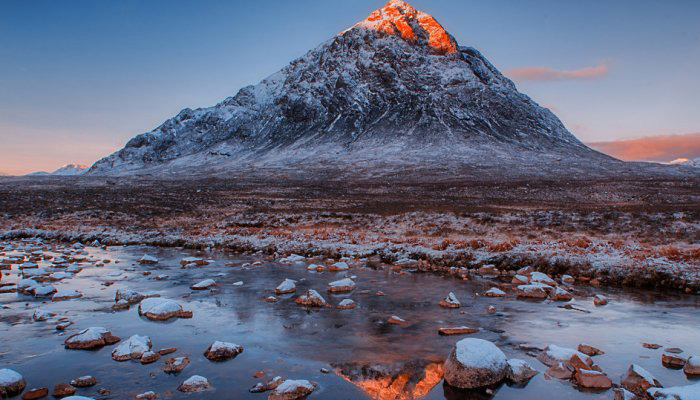
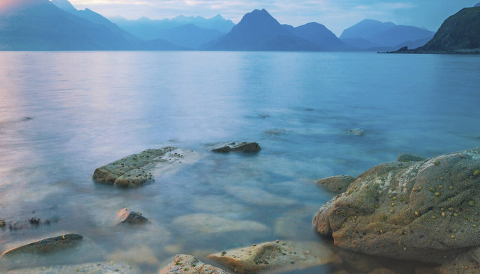
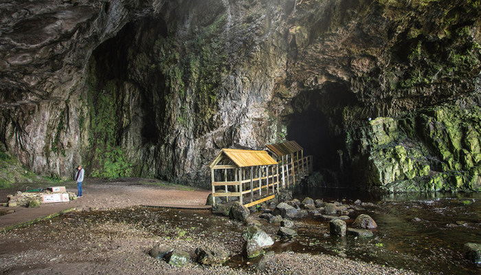
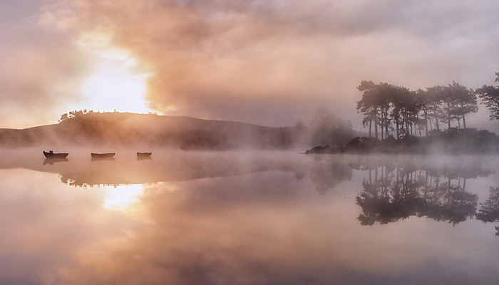
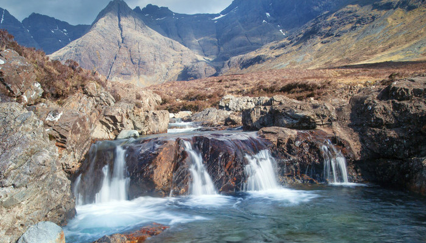
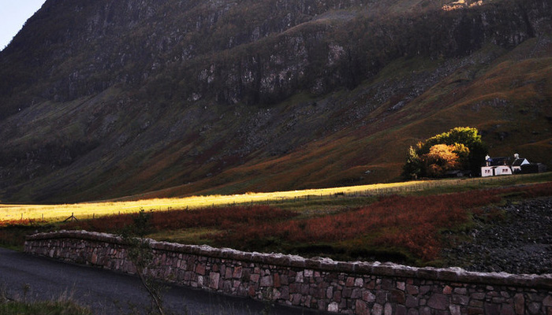
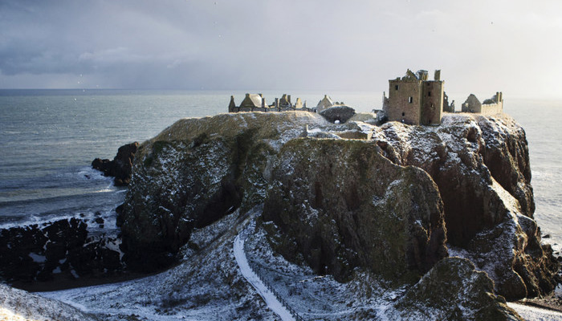
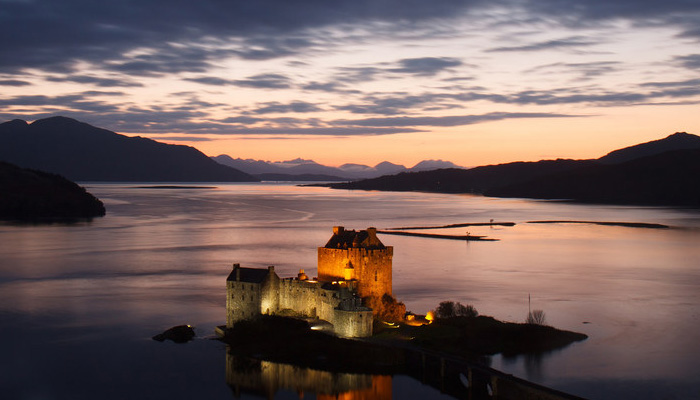
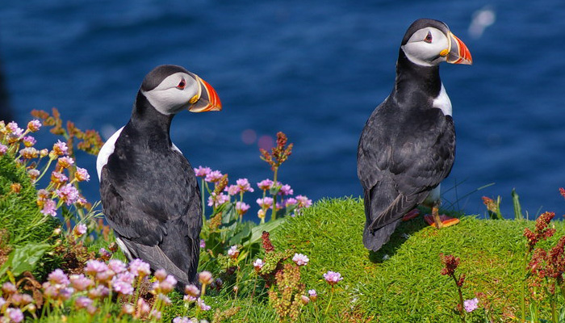
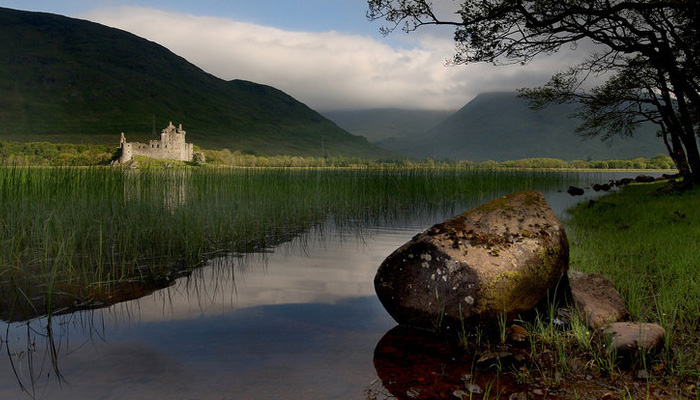
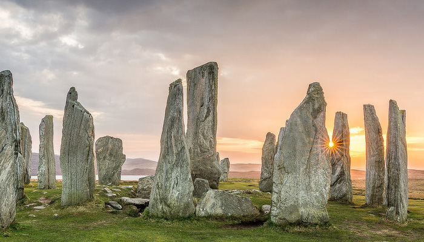
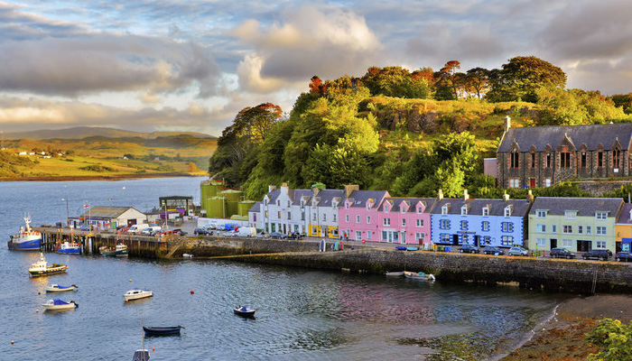
L'Ecosse, nation la plus au nord du Royaume-Uni, comprend des régions sauvages montagneuses telles que les Cairngorms et les Northwest Highlands, entrecoupées de glens glaciaires (vallées) et de lochs (lacs).
Ses principales villes sont Edimbourg, la capitale, avec son château emblématique perché sur une colline, et Glasgow, célèbre pour sa scène culturelle dynamique.
L'Ecosse est également réputée pour le golf, sport né sur le Old Course à St Andrews dans les années 1400.
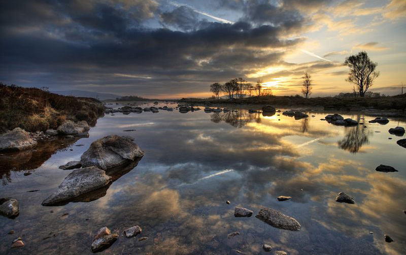
Des terres désertes, des couleurs éclatantes, des montagnes qu'on croirait sorties de terre par enchantement , des eaux cristallines...
Découvrez 20 majestueux paysages d'Ecosse à visiter absolument si vous en avez l'occasion !
Des terres désertes, des couleurs éclatantes, des montagnes qu'on croirait sorties de terre par enchantement , des eaux cristallines...
Découvrez 20 majestueux paysages d'Ecosse à visiter absolument si vous en avez l'occasion !
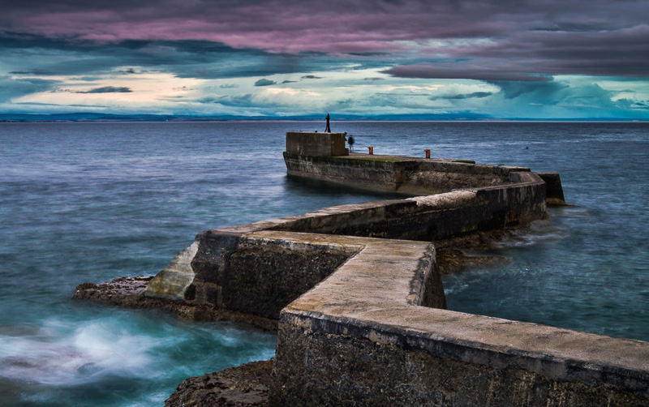